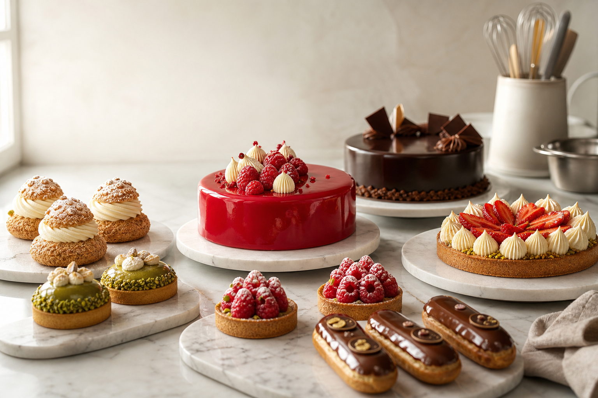
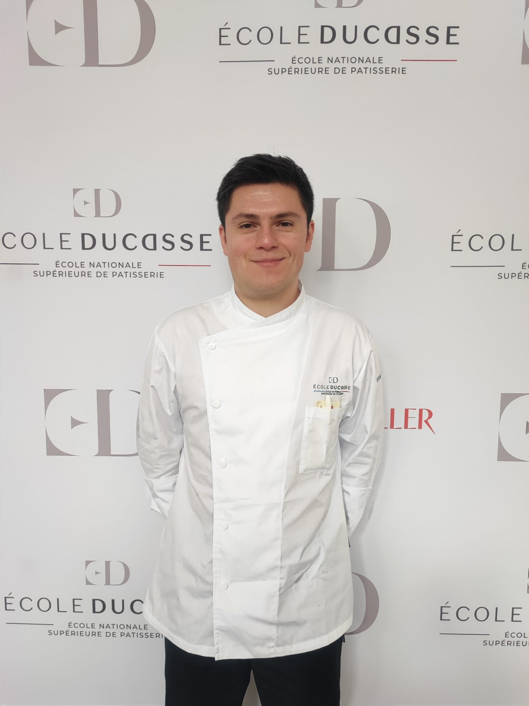
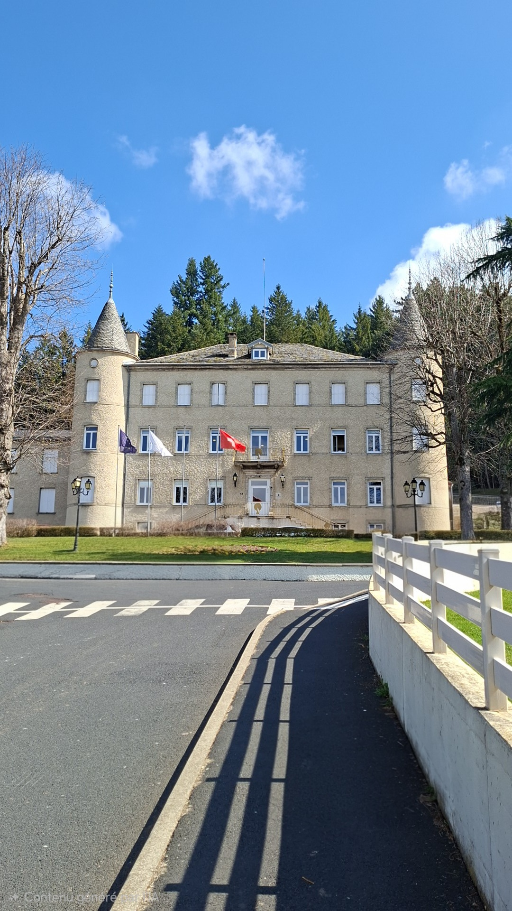

Entremets

CAP pâtisserie · École Ducasse – ENSP
Florian CARBON
Apprenant motivé, sérieux et appliqué, je construis mes bases en pâtisserie avec l'objectif de rejoindre une équipe professionnelle, en priorité auprès d'un employeur américain.
Profil
Résumé de mon parcours
De la finance à la pâtisserie française
Mon parcours a d'abord pris racine dans la finance, avec un Master Grande École spécialisé en finance, une formation sélective comparable à un graduate degree en business ou finance aux États-Unis.
Cette formation m'a apporté une méthode de travail structurée, une grande rigueur d'analyse, une attention constante aux coûts, aux marges, à l'organisation et à la prise de décision.
Après avoir exploré le secteur financier, j'ai choisi de réorienter mon avenir professionnel vers une passion plus concrète, artisanale et profondément liée à la culture française : la pâtisserie.
Je prépare aujourd'hui mon CAP pâtisserie à l'École Ducasse, au sein de l'École Nationale Supérieure de Pâtisserie à Yssingeaux, une institution de référence reconnue internationalement pour l'excellence de son enseignement et la transmission du savoir-faire pâtissier français.
La pâtisserie me permet d'appliquer autrement les qualités acquises en finance : rigueur, organisation, précision et attention aux coûts. Je veux maintenant progresser dans ce métier avec sérieux et exigence.

Formation à l'École Ducasse
Objectif de mon portfolio
Un futur pâtissier en construction, formé à l'exigence française.
Ce portfolio rassemble mes réalisations de CAP pâtisserie à l'École Ducasse – École Nationale Supérieure de Pâtisserie, mes essais personnels et les gestes techniques que je travaille au quotidien.
Mon objectif est d'intégrer une équipe, idéalement aux États-Unis ou auprès d'un employeur américain, afin de gagner en régularité, en rapidité et en exigence professionnelle.
Je souhaite continuer à apprendre au contact de professionnels expérimentés, contribuer avec sérieux au travail d'un laboratoire ou d'une brigade, et développer progressivement une maîtrise solide de la pâtisserie française.

Compétences travaillées
Les bases que je développe.
Tartes
Fonçage, cuisson, garniture
Pâtes, crèmes, fruits et finitions nettes pour une lecture claire.Pâte à choux
Choux, éclairs, religieuses
Régularité, dressage, cuisson, garniture et glaçage.Chocolat
Goût, brillance, précision
Travail des textures, décors simples et finitions propres.Viennoiserie
Feuilletage et régularité
Gestes techniques, cuisson, dorure et présentation.Production
Séries et organisation
Alignement, répétition des gestes et soin apporté aux détails.Album formation
Réalisations en images
Une sélection de mes réalisations issues du CAP pâtisserie à l'École Ducasse – ENSP, classée pour montrer ma progression et la diversité des gestes travaillés.
Méthode
Apprendre les bons gestes, les répéter, les rendre plus réguliers.
En formation, je travaille surtout la précision, l'organisation du poste, la propreté, le respect des étapes et la régularité. Chaque réalisation est une occasion de mieux comprendre les textures, les cuissons et les finitions attendues en laboratoire.
01
Comprendre
Lire une fiche technique, préparer le poste et anticiper les étapes.
02
Répéter
Travailler les gestes jusqu'à gagner en précision et en régularité.
03
Progresser
Observer, corriger, accepter les retours et améliorer le rendu final.
Parcours
CAP pâtisserie à l'École Ducasse, expérience et projet professionnel vers les États-Unis.
CAP pâtisserie à l'École Ducasse – ENSP
Une formation au sein d'une institution française de renommée internationale : pâtes, crèmes, entremets, pâte à choux, viennoiserie, hygiène et organisation.
Stage en pâtisserie
Participation à la production de macarons, éclairs, fraisiers, flans, petits fours, ganaches, mousses, viennoiseries et préparations salées, des pesées au montage en passant par le pétrissage, la cuisson et l'organisation du poste.
Rejoindre un employeur américain
Je recherche une structure où m'investir, progresser avec régularité et devenir rapidement utile à l'équipe, avec une attention particulière pour les opportunités aux États-Unis.
Contact
Disponible pour échanger avec un employeur américain.
Je prépare mon CAP pâtisserie à l'École Ducasse – ENSP et souhaite rejoindre une équipe, en particulier aux États-Unis, qui valorise le sérieux, la curiosité et l'envie d'apprendre.
florian.carbon50@gmail.com